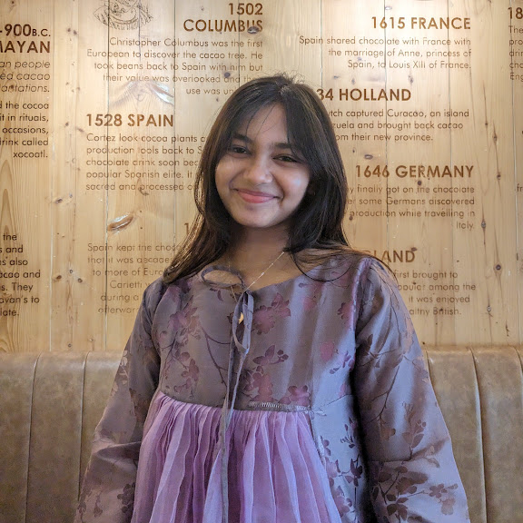

Professional Summary
My technical expertise includes Python, C++, Java, PHP, MySQL, and modern web technologies. I am highly motivated to continuously improve my skills and contribute to innovative technological solutions.

Address: Dhaka, Bangladesh
I am a passionate Computer Science and Engineering (CSE) student with strong interest in backend development, machine learning, and research. I enjoy building scalable systems, solving complex algorithmic problems, and working on real-world projects that create impact.
My technical expertise includes Python, C++, Java, PHP, MySQL, and modern web technologies. I am highly motivated to continuously improve my skills and contribute to innovative technological solutions.